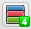

You can now use TooManyTabs to manage your tabs! Be reminded though, in order to save resources, the tab previews will be available only after you visit the tabs.
When you have a bunch of idle tabs you want to go back to later, you can click the yellow arrow to suspend them in the right column. This can save precious memory and make it easier to find the tabs you are actually using.
If you click on the arrows next to "Suspended Tabs", a list of recently closed tabs will be shown. Now you can easily restore those accidentally closed tabs. Don't forget the instant tab search as well!
Enjoy!
Got different sets of sites that you use for work and leisure? Several users on the same Chrome? With FreshStart you can save a group of related tabs as a session which you can later restore at once. You can create as many sessions you like and they won't hog your memory.
In the future we will add bookmark synchronization to FreshStart, and more!